대표 음식 15종
사진은 Wikimedia Commons에 공개된 실제 촬영본이며, 저작자와 라이선스를 각 사진 아래에 적었습니다. 촬영한 식당·지역·조리법에 따라 실제 모습은 다를 수 있습니다.
-

사진: Ardianlumi · CC BY-SA 4.0 · Wikimedia Commons 플리야Flija / Fli
층층이 얇은 반죽을 굽고 크림·버터를 바르는 요리. 전통 화덕덮개(saç)를 활용하며 코소보와 알바니아 여러 지역에서 공유한다.
자세히 보기
-
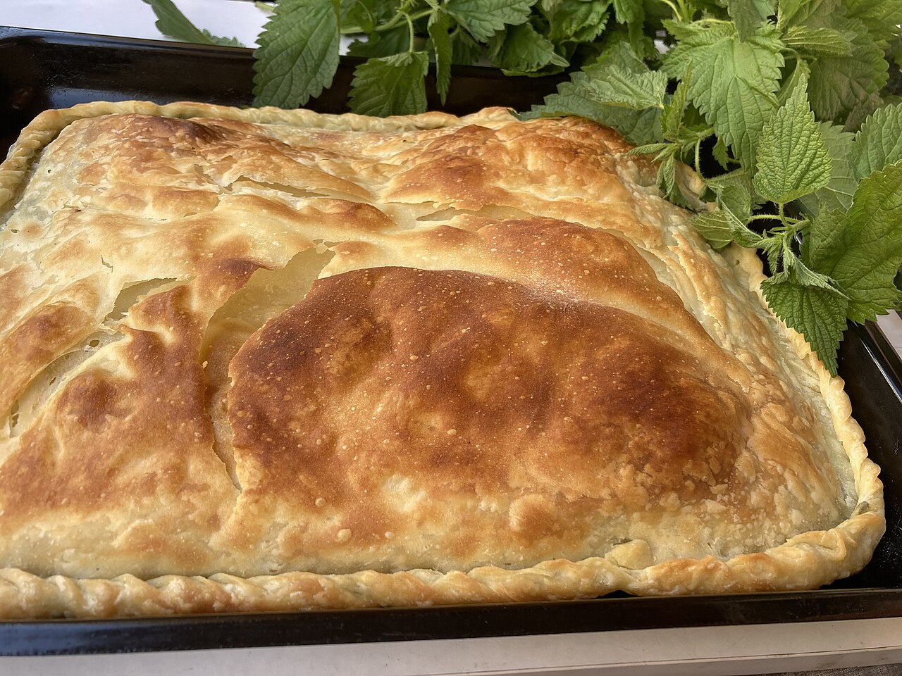
사진: Gatimet shqiptare · CC BY-SA 4.0 · Wikimedia Commons 피테Pite
시금치·치즈·고기 등 다양한 속을 넣은 전통 파이의 총칭. 지역과 가정마다 모양이 크게 다르다.
자세히 보기
-
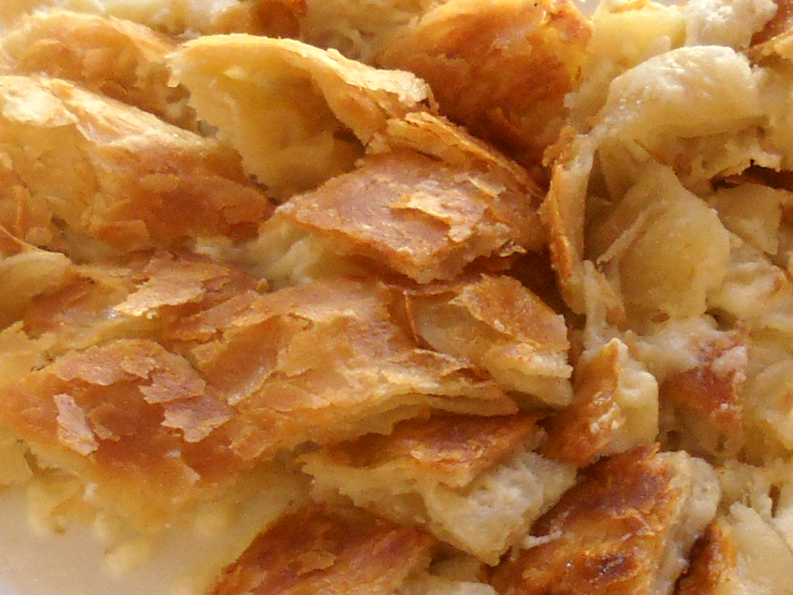
사진: photo Moma SM · CC BY-SA 4.0 · Wikimedia Commons 부레크Burek
육류 소를 넣은 얇은 반죽 파이로 도시 베이커리에서 널리 판매된다. 주변 국가와 공유하는 음식이다.
자세히 보기
-
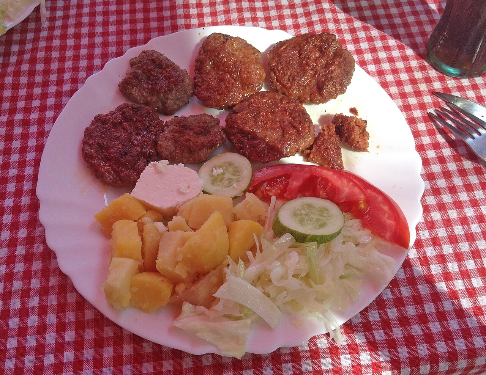
사진: Bdx · CC BY-SA 4.0 · Wikimedia Commons 체바파Qebapa
작은 다진 고기구이를 납작빵·양파와 곁들인다. 프리즈렌·페야 등 지역식당에서 볼 수 있다.
자세히 보기
-

사진: Brücke-Osteuropa · CC0 · Wikimedia Commons 플례스카비차Pleskavicë / Pljeskavica
다진 고기를 넓게 펴서 굽는 발칸식 패티. 빵과 채소, 크림을 곁들인다.
자세히 보기
-
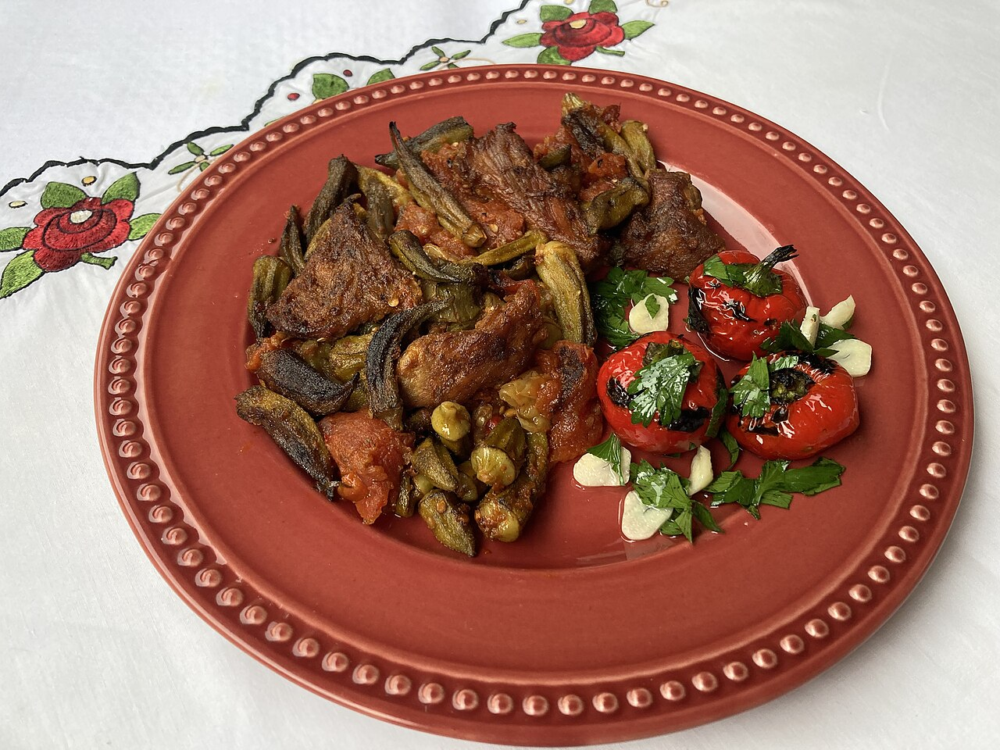
사진: Violeta Myftari Gatimet Shqiptare · CC BY-SA 4.0 · Wikimedia Commons 프리즈렌식 오븐요리Tavë prizreni
고기와 고추·토마토 등 채소를 오븐에 구운 요리. 가정·식당에 따라 조리법이 다르다.
자세히 보기
-

사진: MirelaAndoni · CC BY-SA 4.0 · Wikimedia Commons 타버 코시Tavë kosi
요거트와 고기·달걀 등을 함께 구운 요리. 알바니아와 공유하는 대표 메뉴다.
자세히 보기
-
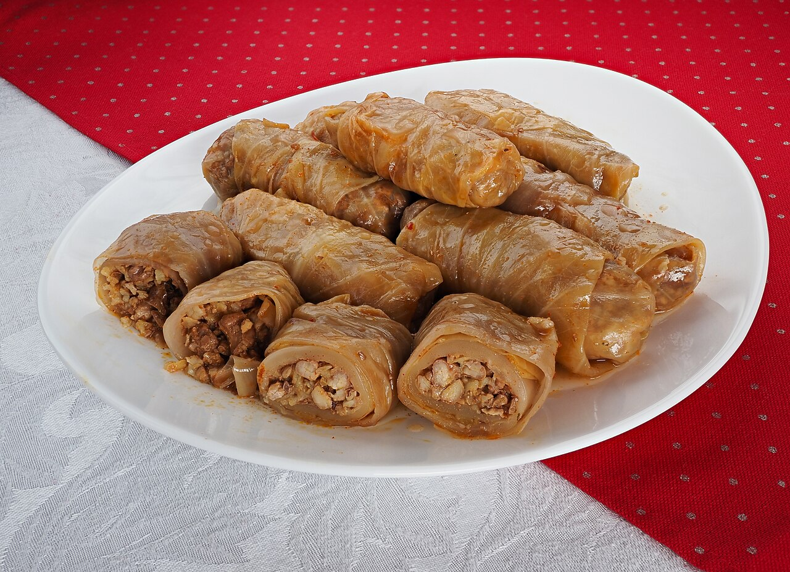
사진: Petar Milošević · CC BY-SA 4.0 · Wikimedia Commons 사르마Sarma
양배추 또는 포도잎에 쌀·고기 소를 싸서 끓인다. 지역 공동체별로 레시피가 다양하다.
자세히 보기
-
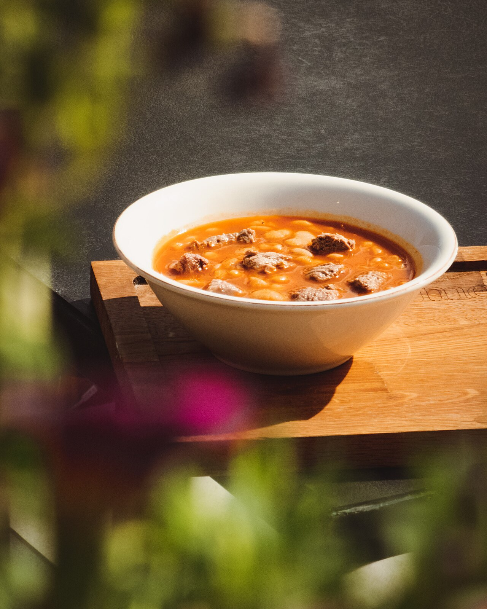
사진: Tigran · CC BY-SA 4.0 · Wikimedia Commons 파술Pasul
흰콩과 양파·고추·육류 등을 넣어 끓이는 음식. 겨울철 가정식으로도 흔하다.
자세히 보기
-
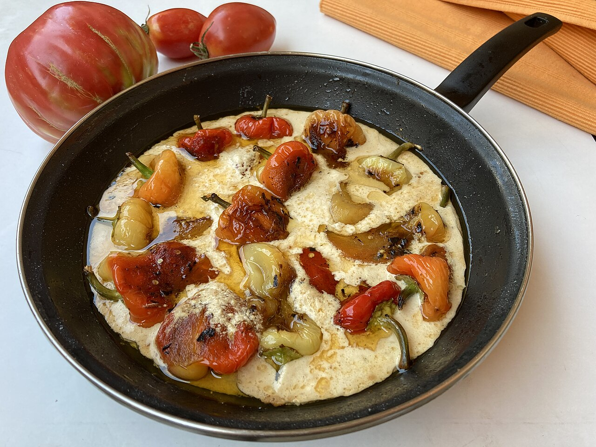
사진: Gatimet shqiptare · CC BY-SA 4.0 · Wikimedia Commons 치즈 넣은 피망Speca me gjizë
굽거나 익힌 피망에 신선 치즈류를 채워 내는 음식. 여름철 피망 생산과 이어지는 음식이다.
자세히 보기
-
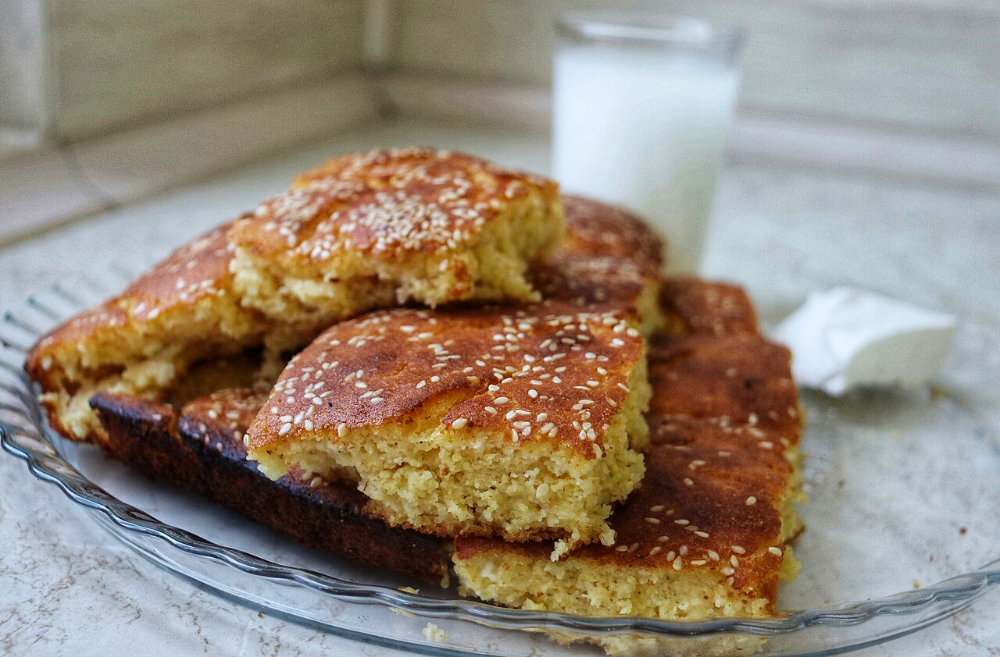
사진: Kkushta · CC BY-SA 4.0 · Wikimedia Commons 레체니크Leqenik
옥수수 가루로 만드는 담백한 구운 빵·케이크류. 발효 유제품과 잘 어울린다.
자세히 보기
-
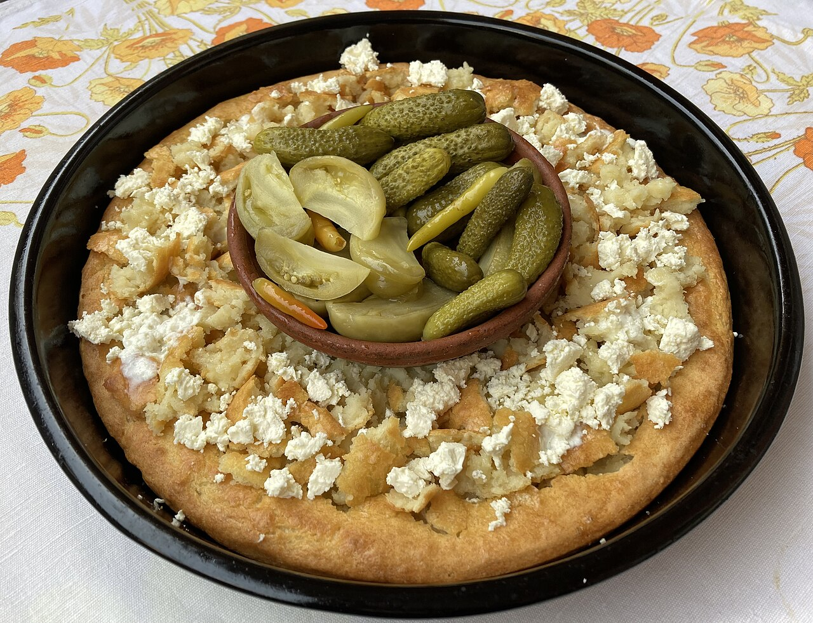
사진: Gatimet shqiptare · CC BY-SA 4.0 · Wikimedia Commons 마즈Mazë
크림·버터·치즈 등 유제품 기반의 전통 조리. 산악 목축 식문화를 보여 주는 음식이다.
자세히 보기
-
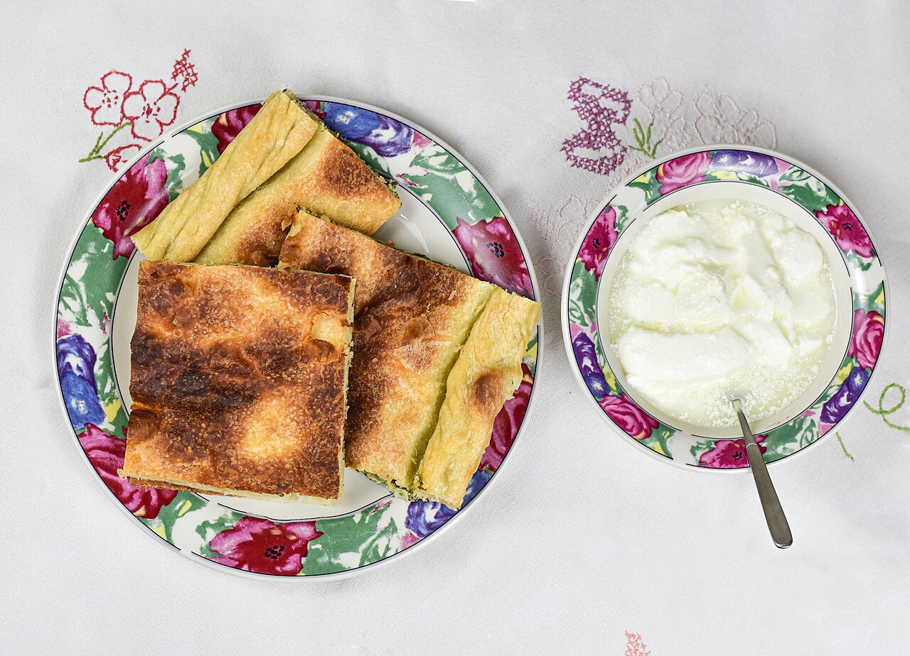
사진: Rrahmani.v · CC BY-SA 4.0 · Wikimedia Commons 시금치 파이Pite me spinaq
시금치를 넣어 구운 얇은 반죽 파이. 파이류의 속재료 다양성을 보여주는 카드다.
자세히 보기
-
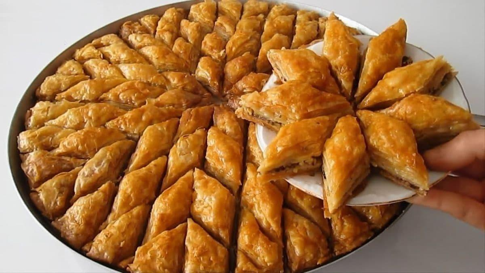
사진: 작성자 미상(Commons 파일 페이지 참고) · CC BY-SA 4.0 · Wikimedia Commons 바클라바Bakllava
호두 등을 얇은 반죽 사이에 넣고 시럽에 적시는 후식. 오스만권 공통 디저트다.
자세히 보기
-
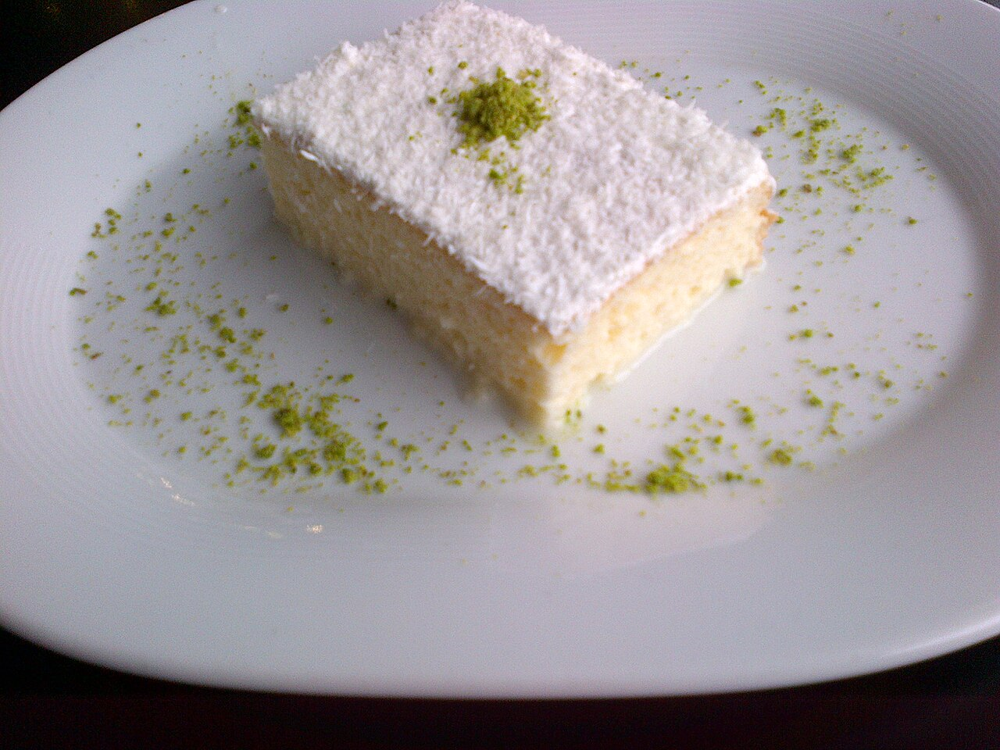
사진: E4024 · CC BY-SA 4.0 · Wikimedia Commons 트리레체Trileçe
우유에 적신 부드러운 케이크. 현대 발칸 제과점에서 인기가 높은 디저트로, 오래된 고유 전통이라고 단정하기는 어렵다.
자세히 보기
함께 알아두면 좋은 점
- 알레르기·식단: 성분과 조리법은 식당·가정마다 달라 일반화할 수 없습니다. 알레르기나 식단 제한이 있다면 주문 전에 직접 확인하세요.